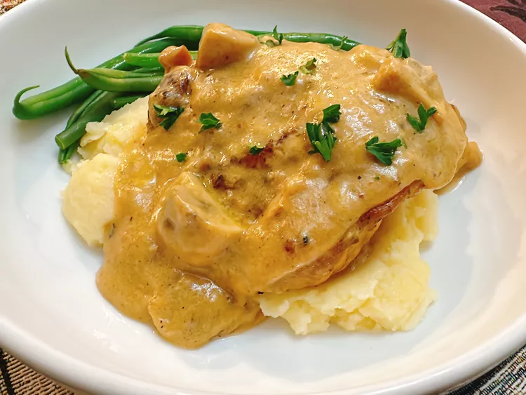

Smothered Chicken
Go back to recipes

Chicken
- 1 (1.25 pound) package bone-in, skin-on chicken thighs
- 1/4 teaspoon garlic powder, or to taste
- salt and freshly ground black pepper to taste
Seasoned Flour
- 1 cup all-purpose flour
- 2 teaspoons garlic powder
- 2 teaspoons smoked paprika
- 2 teaspoons onion powder
- 1/2 teaspoon salt
- 1/2 teaspoon freshly ground black pepper
Gravy
- 2 tablespoons butter
- 2 tablespoons olive oil
- 8 ounces button mushrooms, sliced
- 1 shallot, sliced
- 2 tablespoons minced garlic
- 1 cup chicken bone broth
- 1 cup evaporated milk
- parsley, for garnish
Steps
- Season both sides of chicken thighs with salt, pepper, and garlic powder
- For seasoned flour, whisk flour, garlic powder, smoked paprika, onion powder, salt, and pepper together in a shallow bowl. Set aside 3 tablespoons of seasoned flour.
- Dredge chicken in remaining seasoned flour; set aside on a plate.
- Heat a cast iron skillet over medium heat; melt butter with olive oil. Fry chicken in the skillet until both sides are golden brown, about 7 minutes per side. They will not be completely cooked.
- Remove chicken from the skillet. Add shallot and mushrooms to the skillet, and cook and stir until softened, about 3 minutes. Stir in garlic, and sauté until fragrant, about 30 seconds.
- Sprinkle the reserved seasoned flour over the mixture. Blend until a smooth paste forms. Slowly whisk in bone broth, continue whisking and add evaporated milk.
- Return chicken thighs to the skillet, cover, and reduce heat to low; continue cooking until the an instant read thermometer inserted near the center of thighs reaches 165 degrees F (74 degrees C), 20 to 25 minutes.